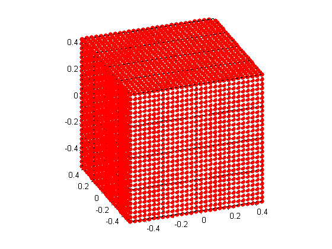

str = sprintf('WAVE SCATTERING PROBLEM: COMPARE SOLUTIONS OF TWO SYSTEMS S (ORIGINAL) AND P (REDUCED)\n');
disp(str);
c = 3*10^10;
f = 10^14;
k = 2*pi*f/c;
kappa = 0.9;
alpha = [1,0,0];
VolQ = 1;
a = 10^(-4);
d = ((a^(2-kappa))/VolQ)^(1/3);
M = round(1/d)^3;
P = round((M^(1/3))/7)^3;
N = ones(1,M);
n = ones(1,M).*sqrt(0.2);
n0 = ones(1,M);
draw = 01;
str = sprintf('\nINPUT');
disp(str);
printInputs(c,f,k,kappa,VolQ,a,d,M,P,alpha);
E = ScatteringCompare3D_SP(a,kappa,alpha,d,M,P,N,n,n0,draw);
str = sprintf('\nOUTPUT\n\nThe distance between the solutions of the S system (orignal) and the P system (reduced) is: %e', E);
disp(str);
WAVE SCATTERING PROBLEM: COMPARE SOLUTIONS OF TWO SYSTEMS S (ORIGINAL) AND P (REDUCED)
INPUT
Speed of light in optics: 30000000000
Frequency in optics: 100000000000000
Wave number k = 2pi/lambda: 20943.951024
Power const with respect to the radius of particles: kappa is in [0,1]: 0.900000
Volume of the domain Q that contains all particles: 1.000000
Radius of one particle: 0.000100
Distance between two particles: d = O(a^(1/3)): 0.034145
Number of particles, M: 24389
Number of small cubes after partitioning the big Q, P: 64
Direction of plane wave, alpha: [1 0 0]
Computing...
The reduced system P:
gmres stopped at iteration 10 without converging to the desired tolerance 1e-06
because the maximum number of iterations was reached.
The iterate returned (number 10) has relative residual 0.72.
The original system S:
gmres stopped at iteration 10 without converging to the desired tolerance 1e-06
because the maximum number of iterations was reached.
The iterate returned (number 10) has relative residual 0.91.
dist =
Columns 1 through 7
0.0006 0.0007 0.0008 0.0006 0.0006 0.0008 0.0009
Columns 8 through 14
0.0006 0.0008 0.0009 0.0010 0.0008 0.0006 0.0006
Columns 15 through 21
0.0007 0.0006 0.0007 0.0008 0.0009 0.0007 0.0008
Columns 22 through 28
0.0009 0.0010 0.0008 0.0009 0.0010 0.0012 0.0009
Columns 29 through 35
0.0006 0.0006 0.0007 0.0006 0.0008 0.0009 0.0011
Columns 36 through 42
0.0008 0.0009 0.0010 0.0011 0.0009 0.0011 0.0012
Columns 43 through 49
0.0013 0.0010 0.0007 0.0008 0.0009 0.0007 0.0006
Columns 50 through 56
0.0007 0.0008 0.0006 0.0006 0.0008 0.0009 0.0006
Columns 57 through 63
0.0008 0.0009 0.0011 0.0008 0.0006 0.0006 0.0007
Column 64
0.0006
nParticleCube =
Columns 1 through 13
343 343 392 343 343 343 392 343 392 392 448 392 343
Columns 14 through 26
343 392 343 343 343 392 343 343 343 392 343 392 392
Columns 27 through 39
448 392 343 343 392 343 392 392 448 392 392 392 448
Columns 40 through 52
392 448 448 512 448 392 392 448 392 343 343 392 343
Columns 53 through 64
343 343 392 343 392 392 448 392 343 343 392 343
dist =
1.0e-05 *
Columns 1 through 7
0.1783 0.2105 0.2103 0.1799 0.1819 0.2231 0.2237
Columns 8 through 14
0.1816 0.1980 0.2294 0.2338 0.1993 0.1727 0.1842
Columns 15 through 21
0.1862 0.1725 0.2082 0.2396 0.2381 0.2073 0.2225
Columns 22 through 28
0.2559 0.2536 0.2192 0.2319 0.2634 0.2630 0.2333
Columns 29 through 35
0.1845 0.1834 0.1871 0.1864 0.2088 0.2391 0.2384
Columns 36 through 42
0.2099 0.2255 0.2496 0.2507 0.2262 0.2344 0.2578
Columns 43 through 49
0.2593 0.2336 0.1885 0.1915 0.1936 0.1883 0.1772
Columns 50 through 56
0.2071 0.2097 0.1773 0.1793 0.2213 0.2227 0.1801
Columns 57 through 63
0.2001 0.2361 0.2388 0.1992 0.1719 0.1834 0.1848
Column 64
0.1720
OUTPUT
The distance between the solutions of the S system (orignal) and the P system (reduced) is: 1.349873e-04
